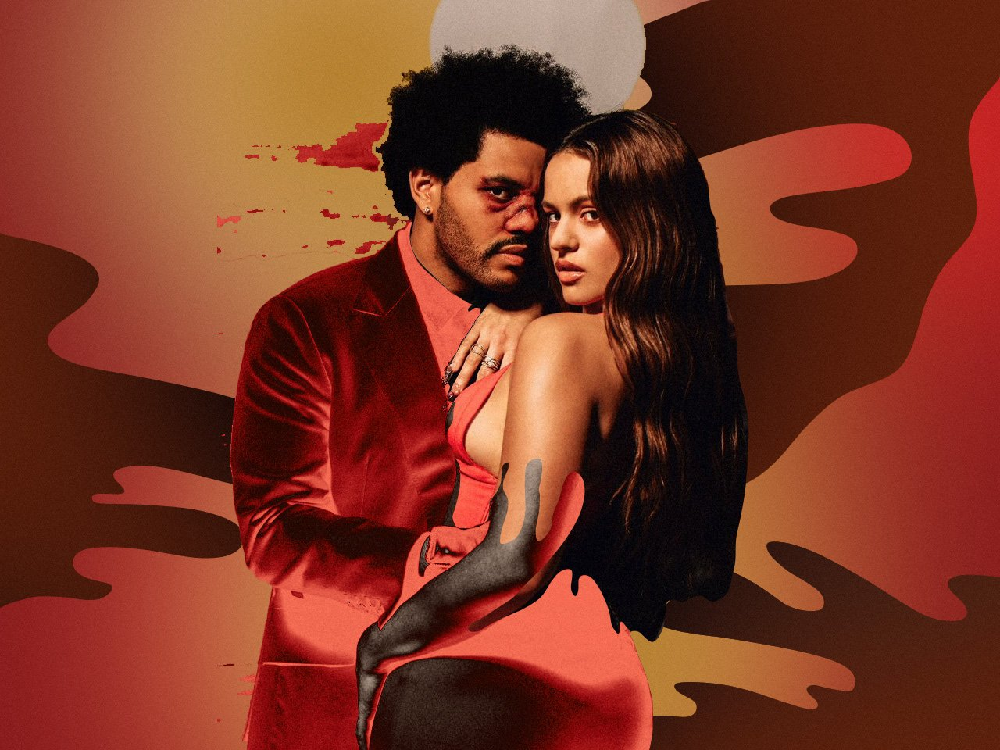
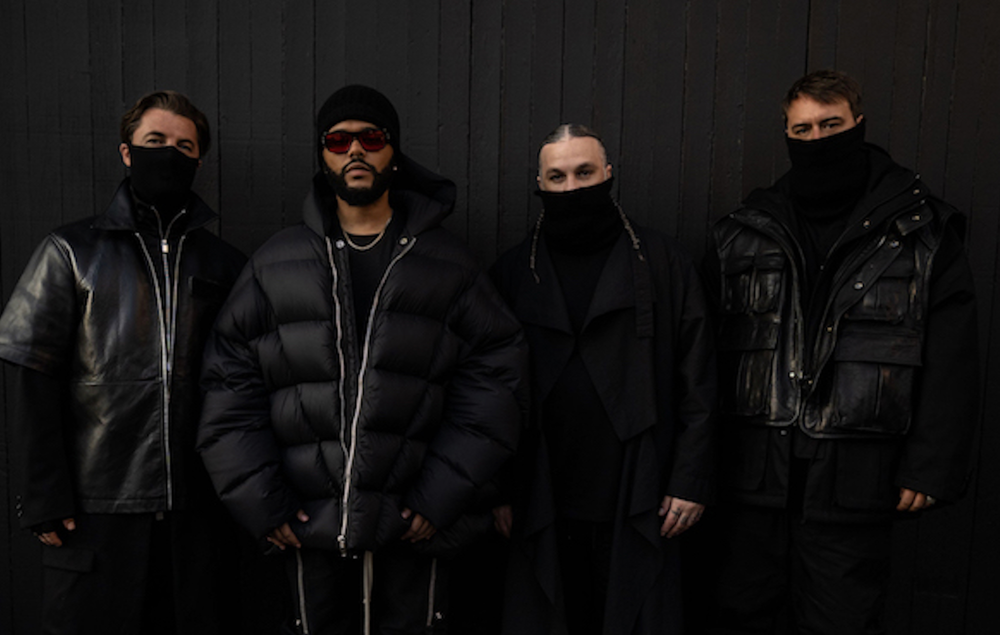
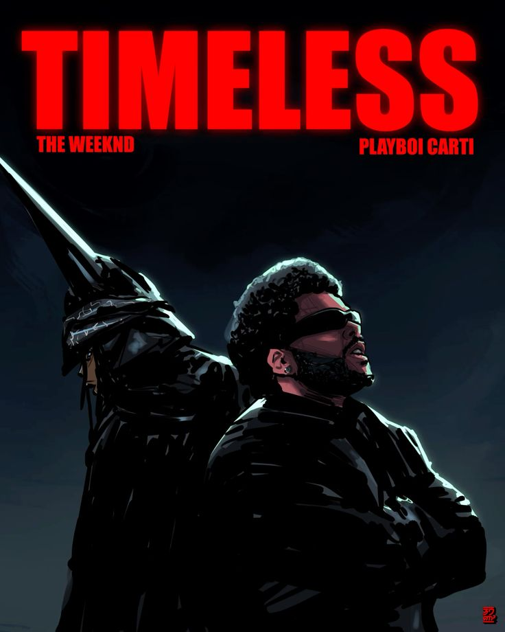
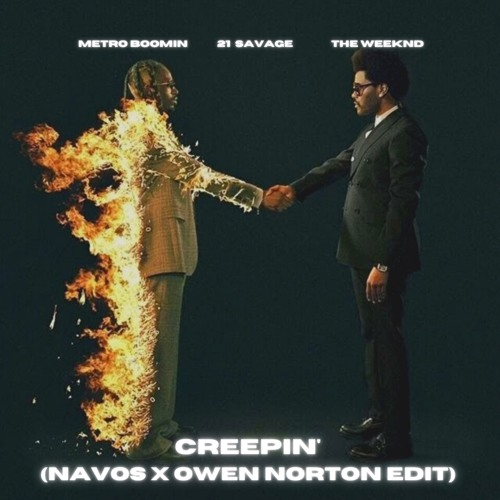

En esta sección, exploramos las alianzas estratégicas donde la voz de The Weeknd se entrelaza con otros universos artísticos. Desde leyendas de la electrónica hasta íconos del pop y el hip-hop, estas son las colaboraciones que no solo dominaron las listas, sino que redefinieron géneros enteros.

Feat. Daft Punk (2016)
Los robots franceses prestaron toda su ingeniería a la construcción de la mega estrella que conquista el show de entretiempo del Super Bowl. Según toda la data, y el propio Abel, este fue el momento exacto en el que “murió” el Weeknd original. El electropop de “Starboy”, y el álbum que lleva el mismo nombre, transformaron su sonido oscuro al pop, especialmente al pop de los años 80, aunque sin abandonar sus evidentes referencias al uso de drogas y el sexo.
Escuchar Track
Feat. Ariana Grande (2014)
Este poderoso track de synth pop con marcadas insinuaciones de sexo duro, marcó exactamente el último momento de la “modesta” fama que poseía The Weeknd. Su siguiente sencillo fue “Earned It”, y el resto es historia. Asimismo, Ariana abrió la puerta a una nueva etapa menos inocente. La potencia de la voz de Ari, y lo agudo del tono de Abel, hicieron de este uno de los duetos más importantes de la década.
Escuchar Track
Feat. Rosalía (2022)
'La Fama' no es solo una canción en español; es un thriller lírico que personifica el éxito masivo como una amante traicionera y superficial. Abel demuestra una versatilidad asombrosa al adaptar su falsete característico al idioma castellano, logrando una química magnética con la artista española. El track profundiza en la obsesión, el aislamiento y el lado oscuro de la vida pública, sirviendo como un puente perfecto entre la melancolía del R&B de The Weeknd y el vanguardismo flamenco de Rosalía.
Escuchar Track
Feat. Sweadish House of Mafia (2022)
La canción captura esa sensación hipnótica de ser atraído por algo que sabes que te hará daño, utilizando una metáfora visual potente que encaja con la era de Dawn FM. Con una producción impecable y sintetizadores gélidos, 'Moth to a Flame' se convirtió rápidamente en un himno de las pistas de baile nocturnas, demostrando que la voz de Tesfaye puede dominar el género electrónico con la misma elegancia y melancolía que el pop o el soul.
Escuchar Track
Feat. Anitta (2025)
'São Paulo' fusiona el Funk Carioca con la atmósfera cinematográfica de la trilogía final de The Weeknd. Es una pieza cargada de mística y energía carnal que rinde homenaje a la cultura brasileña mientras mantiene la esencia vanguardista de Tesfaye. La combinación de las texturas vocales de Anitta con los coros casi operísticos de Abel crea una experiencia sonora única que trasciende las fronteras del idioma.
Escuchar Track
Feat. Playboi Carti (2025)
Bajo la producción magistral de Pharrell Williams, 'Timeless' reúne a dos de las figuras más influyentes de la cultura actual. En este track, Abel y Playboi Carti intercambian versos sobre un ritmo minimalista pero contundente que evoca una sensación de superioridad y longevidad en la industria. La canción destaca por su vibra 'effortless' y su confianza desmedida, consolidándose como un éxito instantáneo que celebra el estatus de leyenda de ambos artistas. Es el equilibrio perfecto entre el trap moderno y la sofisticación melódica que solo la era de Hurry Up Tomorrow podría ofrecer.
Escuchar Track
Feat. Kendrick Lamar (2018)
El 2018 no hubiese podido ser el año de la Pantera Negra sin música triunfal acorde. Los sintetizadores distorsionados de los súper productores canadienses Frank Dukes y Doc McKinney, orquestaron la paranoia y conflictos internos que le generan el nuevo manto del héroe al rey T’Challa. El apasionado falsete de The Weeknd, y el envalentonado verso de Kendrick Lamar, dieron el contexto musical para una nueva clase de héroe.
Escuchar Track
Feat. Drake (2012)
Naturalmente, Abel adora a MJ, pero no olvidemos que aprendió a redefinir la música escuchando a Prince. “The Zone”, la primera colaboración entre The Weeknd y Drake, tiene una gran importancia sonora e histórica. Este par fijó el curso del futuro de la música, y estableció a Canadá entre las capitales sonoras modernas. Lo oscuro y lo atmosférico de la instrumental, la voz estilo Michael Jackson cantando cosas que MJ nunca se hubiese atrevido, y el verso de Drizzy rapeando acerca de enamorarse de strippers cambiaron todo.
Escuchar Track
Feat. Metro Boomin & 21 Savage (2022)
'Creepin' es un ejercicio de sofisticación sonora que rinde homenaje al éxito 'I Don't Wanna Know' de Mario Winans, pero imbuido con la atmósfera gélida y cinematográfica característica de la era Heroes & Villains. La voz de The Weeknd fluye con una melancolía que recuerda a sus mejores momentos en After Hours, elevando la narrativa de traición y desamor a una escala épica. La colaboración no solo dominó las listas globales, sino que también solidificó la química infalible entre Abel y Metro Boomin, demostrando que Tesfaye tiene la habilidad única de canalizar el alma del R&B clásico y transformarlo en algo completamente nuevo, oscuro y atemporal para la generación actual."
Escuchar Track| Canción | Colaborador | Billboard Hot 100 | Certificación |
|---|---|---|---|
| Starboy | Daft Punk | #1 | Diamante (11x Platino) |
| Creepin' | Metro Boomin & 21 Savage | #3 | 2x Platino |
| Love Me Harder | Ariana Grande | #7 | 3x Platino |
| Pray For Me | Kendrick Lamar | #7 | 2x Platino |
| Timeless | Playboi Carti | >#3 | Oro (Debut 2025) |
| Moth To A Flame | Swedish House Mafia | #27 | Platino |
| La Fama | Rosalía | #2 (Latin Airplay) | Platino (Latin) |
| São Paulo | Anitta | Top 10 Global | Tendencia (2025) |
| The Zone | Drake | Cult Classic | Platino |